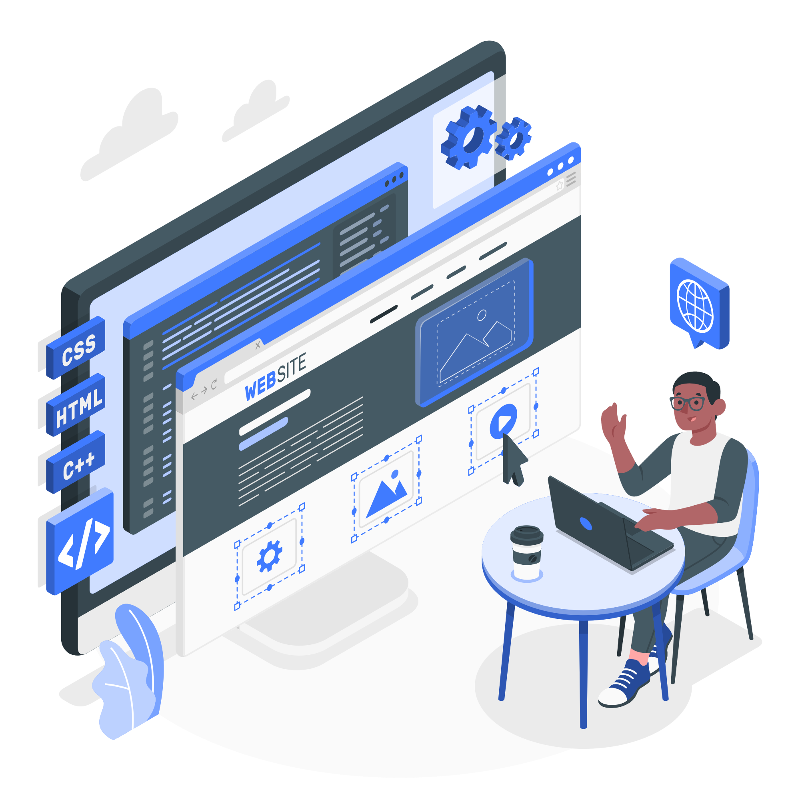

Evolução constante da tecnologia: Novos frameworks, bibliotecas, padrões e tendências surgem o tempo todo (react, vue, next, astro, etc), requerendo estudo constante;
Compatibilidade entre navegadores: Devemos garantir que a aplicação funcione bem no maior número possível de navegadores;
A acessibilidade;
Integração com o back-end: Lidar com as APIs, com os loadings, com a segurança dos dados;
Alta concorrência no mercado: Muito importante um portfólio forte, projetos reais e soft skills.
Oportunidades
Alta demanda no mercado: Toda empresa precisa de um site, um sistema, um app, etc;
Trabalho flexível: Pode ser feito em qualquer lugar, além de poder ser contratado como CLT, PJ ou freelancer;
Criatividade: Misturando lógica e estética, da liberdade para criar;
Carreira: Podemos ir evoluindo, para cargos como:
Sênior;
Tech Lead;
UI/UX designer;
Full stack;
Product manager.

Outros pontos
O mercado valoriza quem resolve problemas e não só quem "faz tela". Saber trabalhar em time, versionar código com Git e entender um pouco de back-end ajuda muito. Estudar sempre é essencial — o front-end muda o tempo todo.